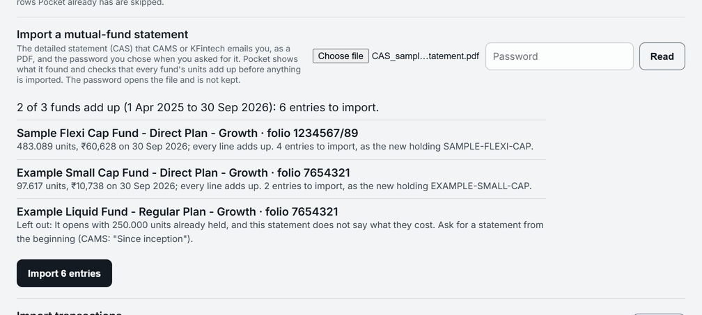

Track your mutual funds from a CAMS or KFintech statement
- Category
- Investing
- By
- Reviewed
- Read
- 5 min
What a CAS is
Most Indian mutual funds keep their records with one of two registrars, CAMS or KFintech.
Either can send a Consolidated Account Statement covering funds from both: a password-protected PDF, by email. The detailed statement lists each folio and scheme, the units it opened with, every transaction (its date, amount, units, NAV and the unit balance after it). It ends with the units it closed with, at a NAV and a market value. A summary statement has only the closing figures, which is not enough to know what each fund cost.
Getting one
On the CAMS website (camsonline.com) the statement is under its investor services as the CAS covering CAMS and KFintech funds. The request asks for:
- the detailed statement, with transactions;
- a period: from the month of the first investment, so every fund's history is on it;
- the email registered with your folios, where it is sent;
- a password you choose, which opens the PDF.
It usually arrives within minutes to a few hours. The screens change from time to time; the registrar's own site has the current steps.
How Pocket checks it
Pocket opens the PDF with the password you type; the password is used once, in memory, and never stored or logged. It then imports a fund only when the statement's own lines agree with each other:
- every line's unit balance is the one before it plus the line's units, and the last is the closing balance;
- the closing units at the statement's NAV come to the market value it states;
- every line with units is one Pocket can place: a purchase, a SIP, a switch, a reinvestment or a redemption.
Here is what that looks like for one fund (an illustration, not a real statement):
| Date | Transaction | Units | Unit balance |
|---|---|---|---|
| Opening unit balance | 0.000 | ||
| 01-Jul-2026 | Systematic Investment (1) | 61.576 | 61.576 |
| 01-Aug-2026 | Systematic Investment (2) | 59.916 | 121.492 |
| 01-Sep-2026 | Systematic Investment (3) | 58.207 | 179.699 |
The units add up to the closing balance of 179.699 units, and 179.699 units × the NAV of ₹86.10 on 30-Sep-2026 come to ₹15,472.08. If the statement's market value is ₹15,472.08, the fund is imported; if any line is off, it is left out, with the reason shown.
Why a fund can be left out
- It opens with units already held. If the statement starts after the first purchase, the cost of those units is not on it, and Pocket does not guess it. A statement from the month of the first investment avoids this.
- Its lines do not add up, or a line is of a kind Pocket cannot place. Nothing is guessed; the reason is shown beside the fund.
- It is a summary statement. With no opening or closing balance, there is nothing to check.
After the import
- Cost is what you paid. Each purchase costs its amount, with stamp duty counted as a fee. When units are redeemed, the oldest are taken first, as your statement and the tax rules count them.
- The statement's NAV prices the fund ("NAV from your statement") until a newer price is entered; an older statement never replaces a newer one's NAV.
- Your cash is untouched. The money behind each purchase, and back from each redemption, is recorded beside it, so the cash Pocket tracks for you does not change.
- Your portfolio's XIRR, shown once money has been invested for about six months, counts each dated purchase.
An honest note
Pocket's statement import is built to the detailed CAS's published layout and tested on statements made to it.
Real statements vary; if one of yours is read wrongly, tell us what Pocket showed, and nothing is imported until you say yes.

- What Pocket found, and which funds add up, shown before anything is imported.
- A fund that does not add up is left out, with its reason.
Questions
What is a CAS?
A Consolidated Account Statement from CAMS or KFintech: a password-protected PDF listing every mutual fund you hold across fund houses. The detailed one has every transaction; the summary has only the closing figures.
Why would Pocket leave a fund out?
When the statement starts after the first purchase (the cost of the units already held is not on it). Or when its lines do not add up, or when it is a summary statement. The reason is shown beside the fund.
Is the statement's password stored?
No. It opens the PDF once, in memory, and is never stored or logged.
Sources
Previous guide: How to work out your net worth in India
Pocket is free on Windows, macOS, Linux and Android, and keeps everything on your own device: download Pocket.